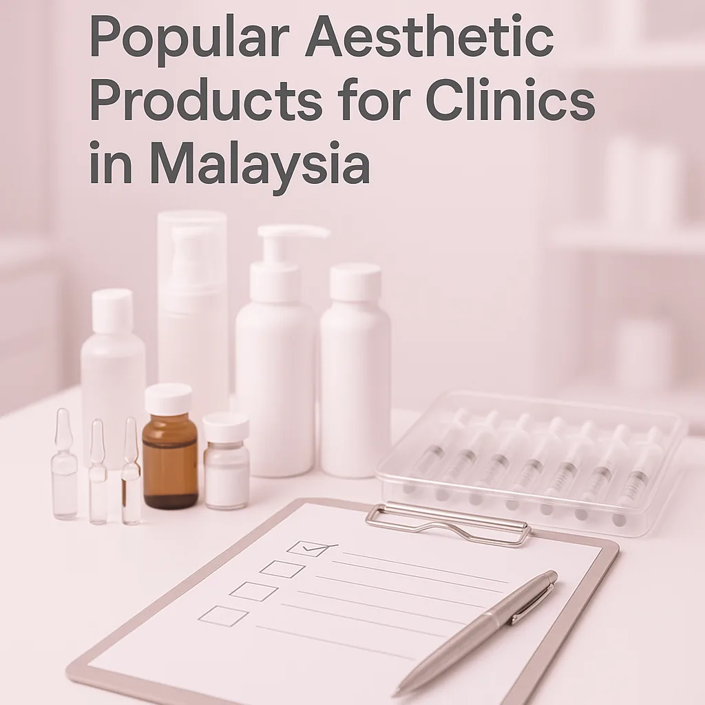
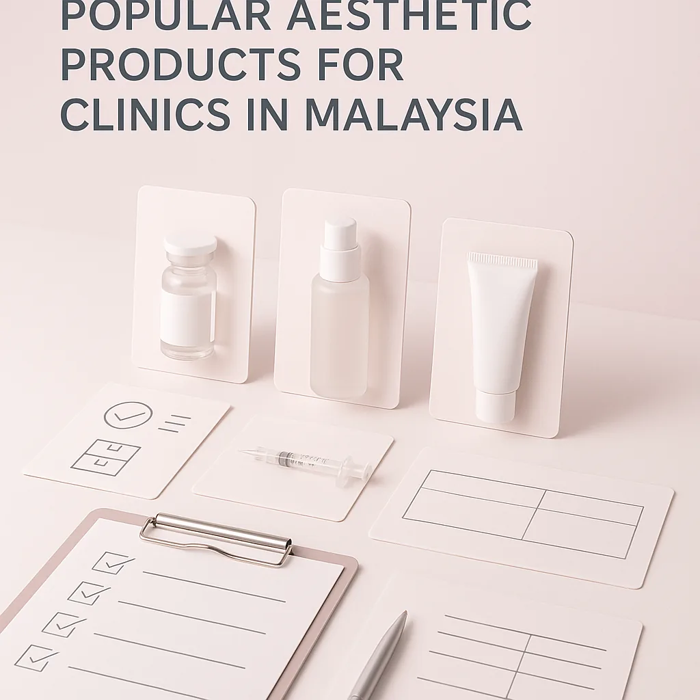
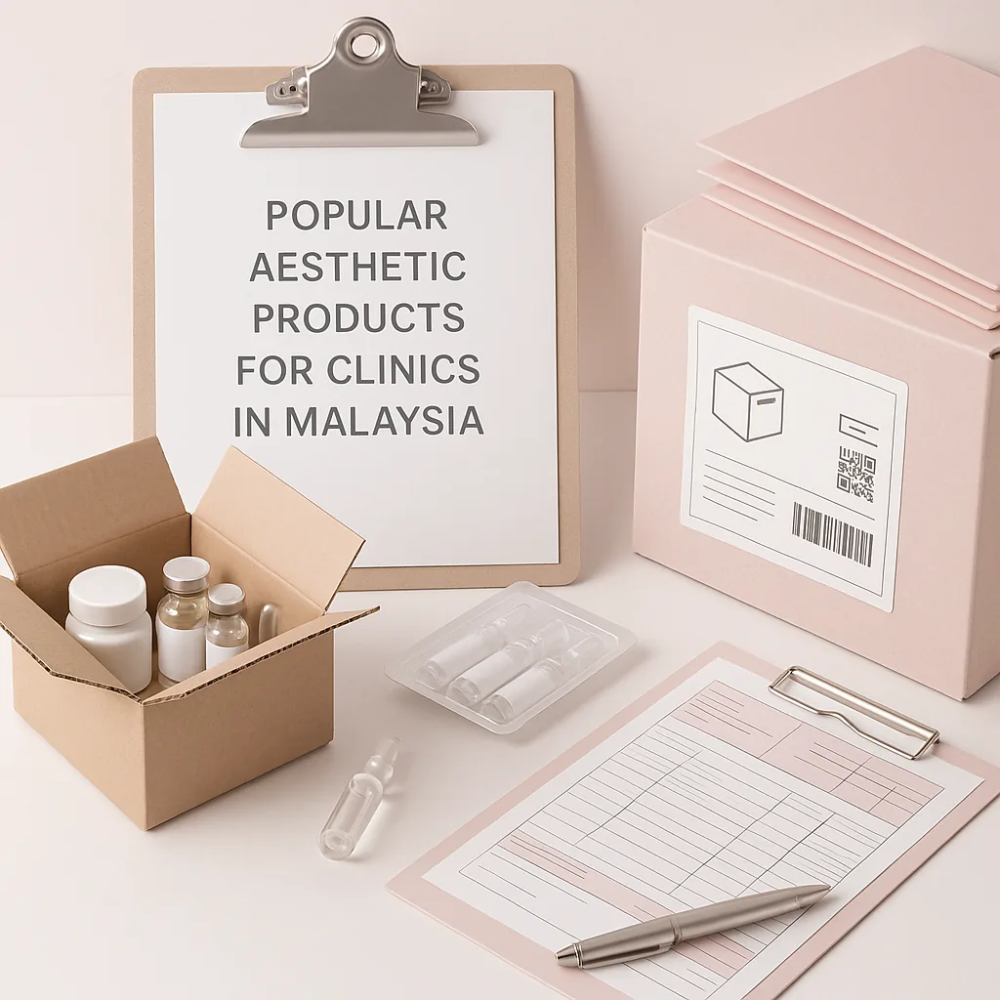

Discover the most sought-after aesthetic products for clinics in Malaysia, tailored for professional buyers in the beauty industry.
As the aesthetic industry in Malaysia continues to grow, clinics and spas face the challenge of sourcing high-quality products that meet their clients' demands. With a plethora of options available, professional buyers must navigate the market effectively to ensure they select the most popular aesthetic products that align with their business objectives. The right products not only enhance client satisfaction but also contribute to the clinic's reputation and profitability.
This guide aims to equip buyers with essential insights into the popular aesthetic products clinics in Malaysia are currently utilizing, helping them make informed purchasing decisions that enhance their service offerings. Understanding the landscape of aesthetic products is crucial for clinics aiming to stay competitive and meet the evolving needs of their clientele.
Key Takeaways
- Understanding the demand for aesthetic products is crucial for effective inventory management.
- Prioritize suppliers with a proven track record in product quality and customer service.
- Evaluate packaging and labeling for compliance with local regulations.
- Consider the shelf life and batch visibility of products to minimize waste.
- Establish clear communication channels with suppliers for efficient order processing.
What this guide covers
- Overview of popular aesthetic products
- Buyer scenarios and needs
- Comparison criteria for products
- Checklist for requesting quotes
- Logistics considerations
- MOQ and reorder planning
What buyers should understand first

The aesthetic market in Malaysia is diverse, with products ranging from injectables to skincare solutions. Clinics and spas often seek products that not only deliver results but also cater to the specific needs of their clientele. Understanding the types of products available, such as dermal fillers, Botox, and advanced skincare lines, is essential for buyers to make informed decisions. This knowledge allows clinics to offer a comprehensive range of services that attract and retain clients.
Furthermore, buyers should be aware of the trends influencing the market, such as the increasing demand for non-invasive procedures and natural-looking results. This shift is driving clinics to seek out innovative products that align with these preferences. By staying informed about the latest advancements and consumer expectations, clinics can position themselves as leaders in the aesthetic field.
Which buyers is this most relevant for?
This guide is particularly relevant for professional buyers from clinics, spas, resellers, and distributors who are involved in the procurement of aesthetic products. Buyers may face various scenarios, such as planning for seasonal demand, introducing new services, or managing inventory levels. Each business type has unique needs; for instance, a high-end clinic may prioritize premium brands, while a reseller might focus on cost-effective options. Understanding these dynamics is key to successful order planning.
Additionally, buyers in urban areas may have different preferences compared to those in rural settings, reflecting the diverse clientele they serve. For example, clinics catering to a younger demographic might focus on trendy skincare products, while those serving an older clientele might prioritize anti-aging solutions. Recognizing these nuances can help buyers tailor their product selections to better meet their customers' needs.
How to compare options before ordering
When evaluating aesthetic products, buyers should consider several criteria to ensure they select the best options for their needs:
- Product Type: Identify the specific aesthetic products that align with your clinic's offerings.
- Brand Reputation: Research brands known for quality and reliability in the aesthetic market.
- Packaging: Ensure packaging meets local regulations and is suitable for your clinic's branding.
- Batch and Expiry Visibility: Look for suppliers that provide clear information on product batches and expiration dates.
- Supplier Communication: Evaluate the responsiveness and support offered by potential suppliers.
- Destination Requirements: Consider logistics factors such as shipping times and costs to your location.
Buyer checklist before requesting a quote


- Define the specific products needed, including quantities and variants.
- Verify compliance with local regulations for aesthetic products.
- Assess your budget and desired price points.
- Prepare questions regarding shipping, handling, and delivery timelines.
- Gather information on supplier terms, including payment and return policies.
- Confirm the minimum order quantity (MOQ) requirements.
- Review your clinic's current inventory to avoid over-ordering.
Shipping, packing and documentation questions
Logistics play a critical role in the procurement process. Buyers should prepare to address the following questions:
- What are the typical shipping times for the products ordered?
- What packing materials are used to ensure product safety during transit?
- What documentation is required for customs clearance?
- How does the supplier handle damaged or incorrect shipments?
- What are the costs associated with shipping to your clinic's location?
- Are there any special handling requirements for specific products?
MOQ, quotation and reorder planning
When planning orders, it is essential to understand the minimum order quantities (MOQ) set by suppliers. Buyers should prepare by:
- Estimating the quantities needed based on client demand and service offerings.
- Identifying product variants that may be necessary for different treatments.
- Providing accurate destination details to ensure smooth logistics.
- Contacting SOLA to confirm current availability and obtain a wholesale quotation.
- Considering future trends that may affect product demand.
FAQ
What are the most popular aesthetic products in Malaysia?
Popular products include dermal fillers, Botox, and specialized skincare lines tailored for various skin types.
How can I ensure product quality?
Choose suppliers with a strong reputation and positive reviews in the aesthetic industry.
What should I consider regarding shipping?
Assess shipping costs, times, and the supplier's ability to provide necessary documentation for customs.
How do I manage inventory effectively?
Implement reorder planning based on client demand and product shelf life to minimize waste.
Can I get a quote for bulk orders?
Yes, contact SOLA for wholesale quotation via WhatsApp to discuss your specific needs.
Planning a wholesale request?
Send product names, quantities and destination for a tailored discussion.
Contact SOLA on WhatsApp →General educational content for professional buyers. Not medical, legal, regulatory or import advice.